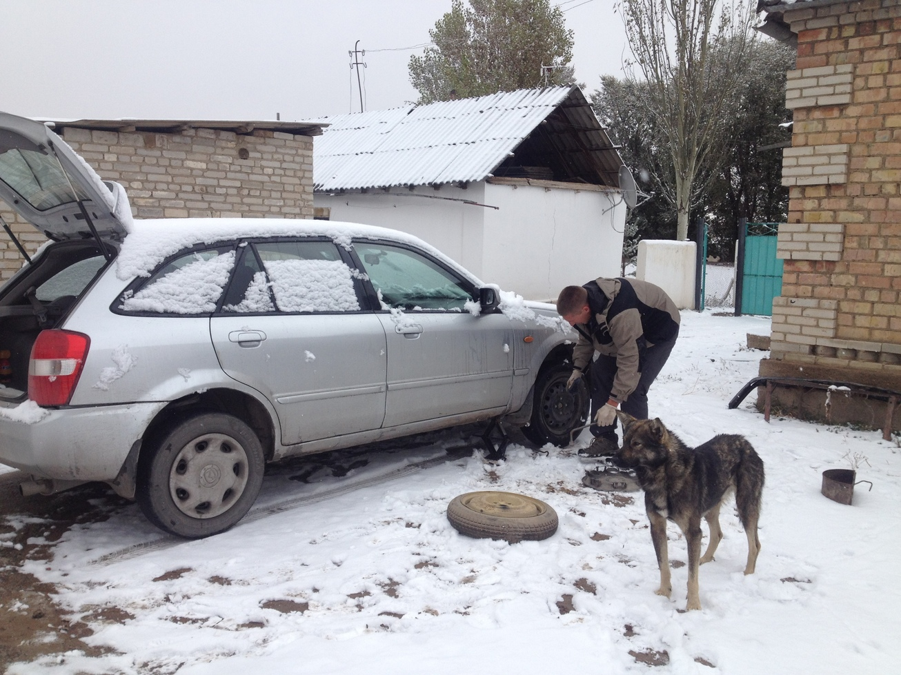
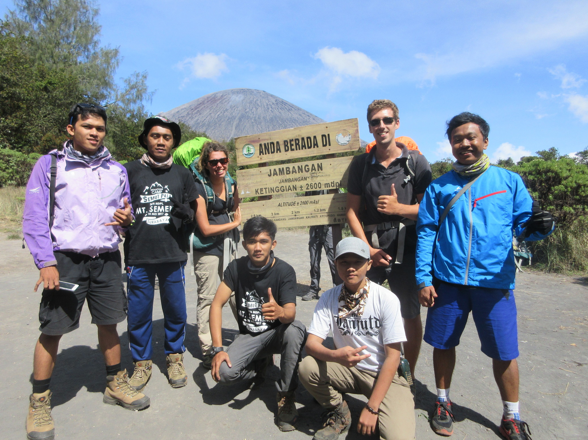
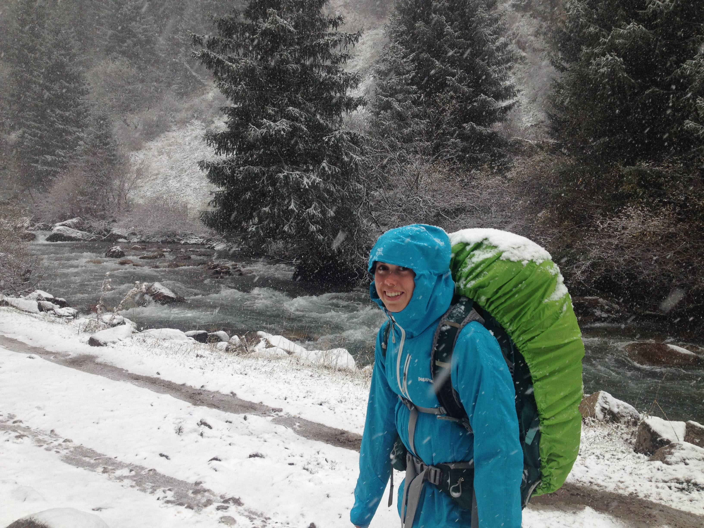
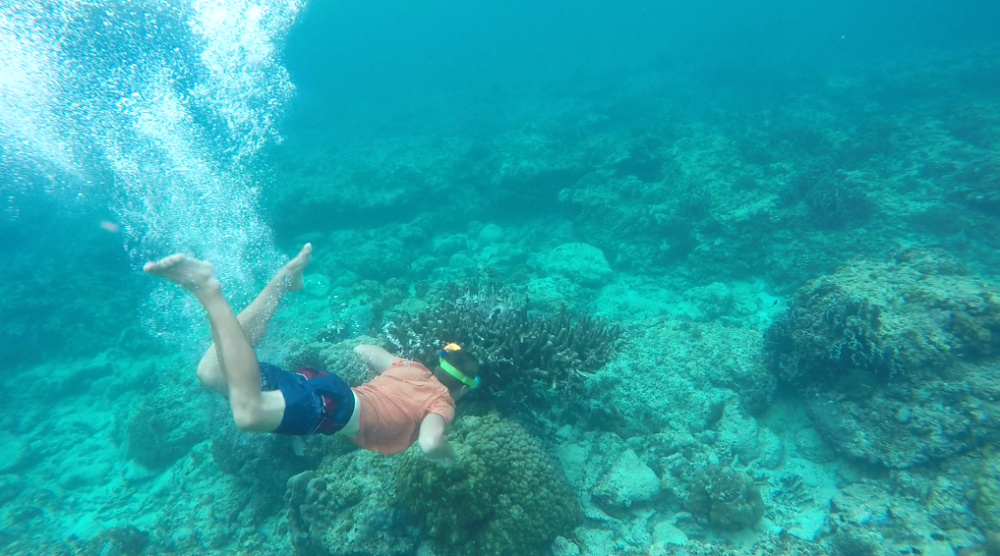

By Bri 18/June/17 Kyrgyzstan
Curse of the Lakes Part II: Stood Up at the Mosque
After realising that the snow was settling in for the winter over the Kyrgyz highlands, perhaps the best course of action was not to go in search of more frosty, remote alpine lakes. But that is what we did. This time, we somewhat expected that not everything would go according to plan. We didn't expect, however, for our plans to be torn to shreds in a matter of hours...

By Bri 31/May/17 Indonesia
Indecipherable Indonesia
It's almost time for us to leave Indonesia, and as much as we are craving readily available bread, beer and trains, there are many things we are seriously going to miss. While here, we have conquered the mighty sambal, learnt enough Bahasa Indonesia to convince people we understand them and made many delightful new friends. There were a few things, however, that completely went over our heads...

By Bri 17/May/17 Kyrgyzstan
The curse of the lakes part one: Let it snow
Tourists, backpackers, hikers, armchair travellers, nomads, campers, hippies, gap yah toffs, explorers, adventurers and holiday goers; we all love a bit of a mountain lake. Well, at least I'm sure we would, had we ever successfully managed to see one. We have been very lucky with our travel plans so far (mostly by pure fluke), but you can't have everything. Some things you are just cursed never to see...

By Bri 24/April/17 Timor-Leste
Atauro in coral, guns and fishing boats
On an island where favours carry more monetary value amongst locals than legal tender, the solitary police officer's hardest task is staying awake on duty in the face of the blazing midday sun and that being late for school is as much a problem for the teachers as it is for kids, it wasn't too difficult to forget the rest of the world exists...

By Bri 04/Apr/17 Uzbekistan
Smugglers, pleas and the Aral Sea
It was clear from the border that Uzbekistan was going to be a lot of... challenges. Black money, bribery and a recently deceased dictator were the tip of the iceberg for this Stan. Needless to say, we didn't spend much time being bored...